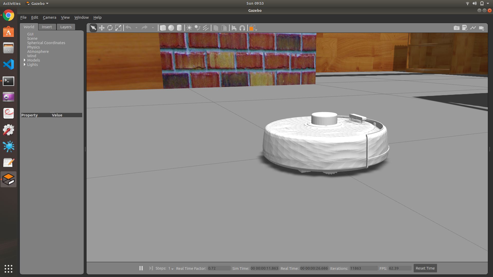
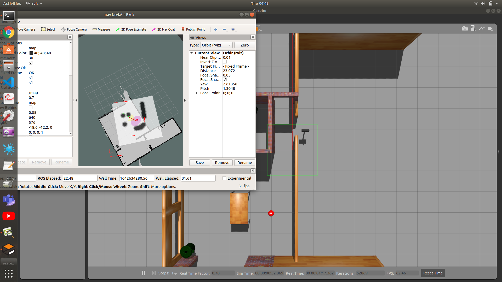

Multi Purpose Household Bot

fig 1: Mp-Bot
A Household bot designed to help in day to day activites.It's a fully ROS integrated bot designed to Vacuum floor,Autonomusly navigate,Detect threats,Monitor Baby etc..
We are curently working on building physcial hardware of the bot,creating an app to control it and Vaccum plugins for gazebo to simulate cleaning in gazebo.
The complete package including the plan can be found at Dot-Bot.
Hardware Design
We desgined our Bot on Solidwork with continous testing on Gazebo.We have performe multiple stress analysis to ensure it's durablity and Airflow simulation in Solidworks to ensure it's working and compability with Navigation sysytem.

fig 2: Solid Work Images
Robot Control And Navigation
We will use a PID controller to control the wheels of the bot and a differential drive controller as a low level controller of the bot.
We have implemented ROS Navigation Stack on our Bot to autonomously navigate it through house. We will Gmappping SLam for map making,AMCL for localization, teb_local_planner as local planner and A* based algorithm as global planner

fig 3: Navigation Stack
Baby Monitoring and Threat Detection
We have created a Baby Monitoring Algorithm through which bot follows the baby which is detected using YoloV3 Algorithm.We use same Algorithm to detect threts like knifes in the frame and if it's close to baby we trigger alarm. We have also implemented face identification algorithm based on which bit greets known faces and beeps for unknown one's.

fig 5:Person Detection Demo